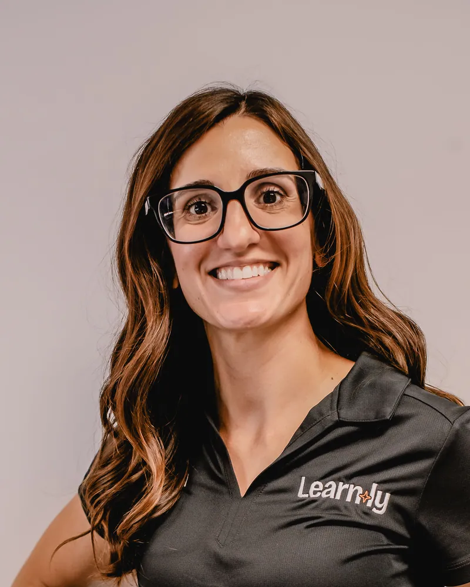

Lauren Tebbenhoff
Cofounder and a determined momAs a full-time working mom to an active 8-year-old son, I knew the camp struggle firsthand. I was tired of paying a premium for stale, repetitive programs only to be met with daily complaints, a cycle that left me battling heavy working-parent guilt. I wanted a camp where my son could genuinely have fun while getting the brain-building challenges he needed. I've been working with families since high school — from day cares, to family entertainment, to supplemental education — and I knew there was a niche for families that was needed. That frustration became the spark for Learnly.